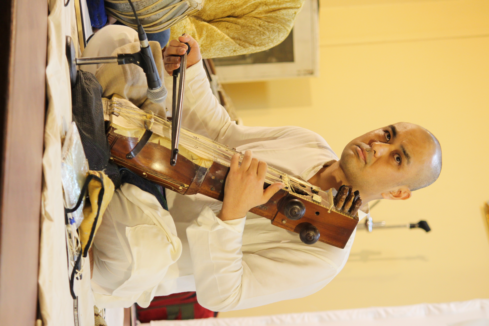

Hindustani Classical Music
北インド古典音楽
Yuji Nakagawa is a Japanese-born sarangi player who has studied the instrument under maestros across India for over 16 years.
As one of the senior-most disciples of the late Pt. Dhruba Ghosh, Yuji honed his skills under his guidance for 12 years. He studied with Dhrubaji in the rigorous guru-shishya parampara (traditional guru-disciple system), supported in part by an ICCR scholarship from 2009 to 2015. He currently receives musical guidance from Vidushi Tulika Ghosh.
His initial training in the sarangi took place in Varanasi under senior sarangi master Ustad Faiyaz Ali Khan. He also received technical guidance from Shri Sangeet Mishra.
Yuji has performed extensively as a soloist and has also accompanied many eminent Hindustani classical musicians. He has given solo sarangi recitals across India, as well as solo and ensemble performances in countries including Thailand, Singapore, the Netherlands, Canada, and his home country, Japan.
Yuji’s performances have received critical acclaim, and he has also received awards and scholarships for his music.
ナカガワ ユウジは、日本生まれのサーランギー奏者。 16年以上にわたり、インド各地の巨匠たちのもとでサーランギーを学ぶ。
故Pt. ドゥルバ・ゴーシュの高弟の一人として、 12年間にわたり師のもとで研鑽を積む。 2009年から2015年まではICCR（インド文化関係評議会）奨学生として 奨学金を受けながら、教育機関での学習と並行して、 伝統的な師弟制度のもとでゴーシュ氏より音楽を学んだ。 現在はゴーシュ氏の妹、Vidushi Tulika Ghoshより 音楽的な指導を受けている。
サーランギーを学び始めた当初はバナーラスにて、 サーランギー奏者ウスタード・ファイヤズ・アリ・カーン氏より 演奏法の基礎を学び、またサンギート・ミシュラ氏からも 演奏技術に関する指導を受けた。
ソリストとして幅広く演奏活動を行う一方、 多くの著名な北インド古典音楽家の伴奏も務める。 インド各地でサーランギ・ソロを行うほか、 タイ、シンガポール、オランダ、カナダ、日本などで、 サーランギ・ソロ、声楽伴奏、現代音楽アンサンブルなど、 幅広い形態の公演に出演している。
これまでの演奏活動は高い評価を受けている。 また、2018年大阪国際音楽コンクール民俗音楽部門第1位、 インドの第51回スワル・サーダナー・サミティ主催 インド古典音楽コンクール器楽部門第1位などを受賞している。
Loading concert information...
公演情報を読み込んでいます...
Sarangi performances, recordings and videos.
サーランギーの演奏・録音・映像をご紹介します。
Sarangi and Hindustani classical music lessons.
サーランギーおよび北インド古典音楽のレッスン。
Concert bookings, collaborations and lesson inquiries.
演奏依頼、共演、レッスンなどのお問い合わせ。